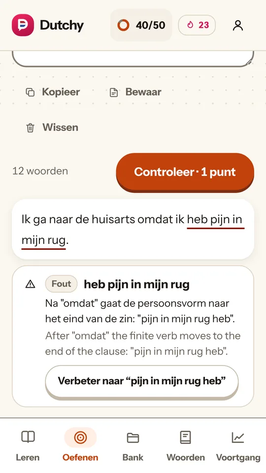
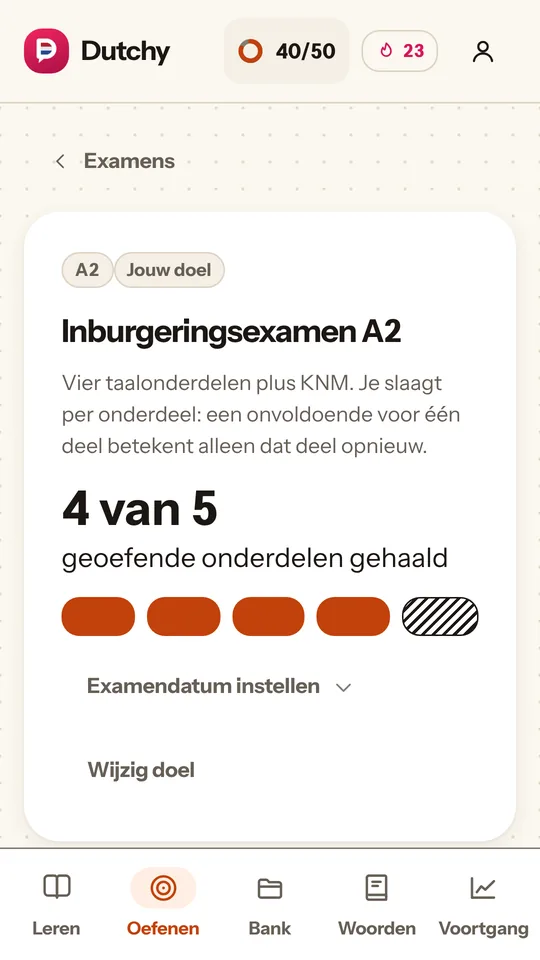
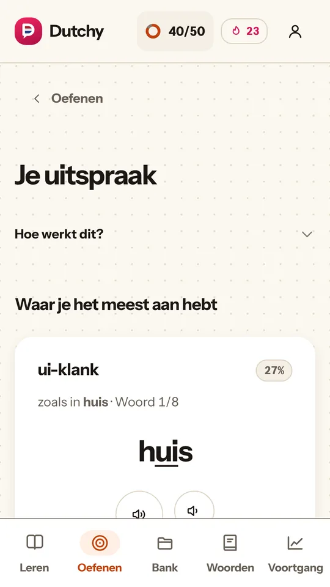
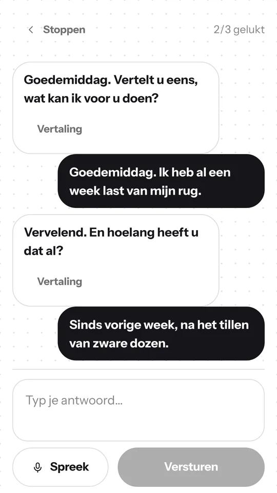
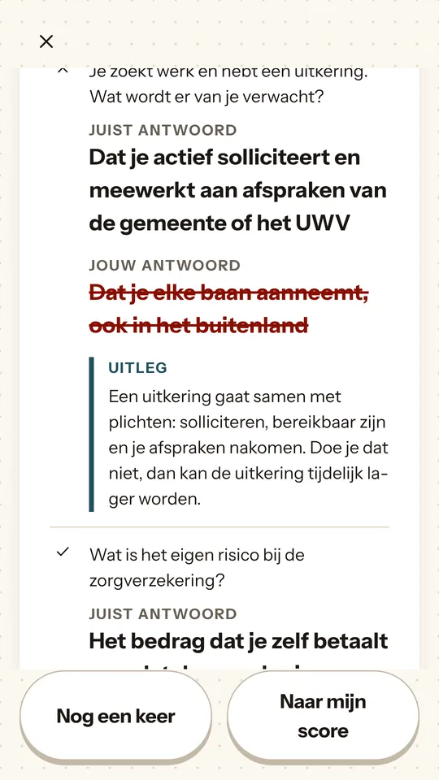
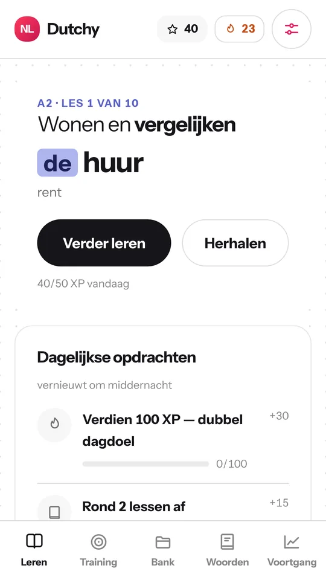

Android-test begint
Nederlands dat je meteen kunt gebruiken.
Een praktische cursus van A1 tot C2 voor wie in Nederland woont, werkt of studeert: de brief van de gemeente, het telefoontje naar de huisarts, en het examen als je dat nodig hebt.
Heel A1 is gratis. Geen account, geen advertenties, geen tracking.


- 40units, van A1 tot C2
- 1.300+woorden, elk met lidwoord, meervoud en voorbeeldzin
- 4oefenexamens: inburgering A2 en B1, Staatsexamen NT2 I en II
- 6rollenspellen, van de bakker tot het sollicitatiegesprek
Functies
Een cursus die leert wat apps meestal overslaan
Schrijven met echte correctie
Schrijf de brief of mail die je echt moet versturen. Dutchy markeert de fout in je eigen zin en zegt welke regel je brak, niet alleen dát het fout was.
Ik ga naar de dokter omdat ik heb pijn in mijn rug.
Na “omdat” gaat de persoonsvorm naar het eind van de zin.
- Zinsbouw, geen stijl: werkwoord op plaats twee, persoonsvorm achteraan in de bijzin, congruentie, de/het, uitgangen van bijvoeglijke naamwoorden
- Draait op je telefoon, dus je tekst verlaat je toestel niet
- Zwijgt liever dan dat het gokt: de controle is getest op al het correcte Nederlands dat in de cursus zit
- De schrijfhulp: een blanco pagina met voorbeelden voor de verhuurder, de gemeente, een ziekmelding, een sollicitatie en de buren
Uitspraak, klank voor klank
Zeg een zin in en zie welke klank er verkeerd uitkwam: je g als k, je ui als ou. Dutchy houdt per klank bij hoe het gaat en maakt oefeningen met cursuswoorden die jouw zwakste klanken bevatten.
- “Je ui staat op 27%, je g op 45%” in plaats van “je uitspraak kan beter”
- Elke verkeerde klank is gemarkeerd in je eigen zin, met een afspeelknop om hem te horen
- Eerlijke grenzen: het ziet klanken die als een andere Nederlandse klank aankomen. Het oordeelt niet over je accent en verzint nooit een fout.

Gesprekken om in te stuntelen
Zes rollenspellen: de bakker, de huisarts, de gemeente, een verhuurder, een sollicitatiegesprek en de buren. Ze zijn geschreven, niet gegenereerd, dus elke zin van de ander is Nederlands dat echt gezegd wordt, ook de vragen waar leerlingen over struikelen.
- Zeg wat je bedoelt: de controle is ruim over de vorm en streng over de inhoud
- Word je niet begrepen, dan vraagt de ander het nog eens, zoals een mens dat doet
- De terugblik laat zien wat je geregeld hebt, de grammatica van wat je typte en de klanken van wat je zei

Examen op komst? Kies het als je doel
Zet de examenmodus aan als er een datum in je agenda staat. Tot die tijd blijft hij uit de weg.
- Inburgering A2 en B1 en Staatsexamen NT2 Programma I en II
- Oefenexamens met de onderdelen en de tijden van het echte examen, een cijfer per onderdeel en een melding welk onderdeel je nog niet gaat halen
- KNM: het verplichte onderdeel Kennis van de Nederlandse Maatschappij, met 54 vragen volgens de eindtermen die sinds 1 juli 2025 gelden, en uitleg waaróm een antwoord goed is

Eén pad van A1 tot C2
Een pad van units met een markering bij de unit waar je bent. Gespreide herhaling brengt terug wat je bijna vergeet, en wat je mist komt eerder terug. Elke les laat je hetzelfde woord herkennen, maken, horen en zeggen.
- Een niveautest van 16 vragen, of kies zelf je niveau
- Immersiemodus: instructies alleen in het Nederlands en een verhaal van acht hoofdstukken dat van A1 naar B1 klimt
- Dagelijkse opdrachten. Een limiet van vijf fouten per dag is optioneel en staat standaard uit

Werkt offline
De hele cursus zit in de app. Niet inloggen, geen server, niet wachten op bereik in de trein.
Neem je aantekeningen mee
Exporteer je woordenbank en aantekeningen als Markdown, platte tekst, CSV, Anki of JSON, of deel ze met Notities, Keep, Obsidian, Notion of WhatsApp.
Goed te lezen, goed te horen
Labels voor schermlezers, Engelse vertalingen als Engels gemarkeerd, kleuren getest op kleurenblindheid, en een vinkje of kruisje bij elk goed of fout antwoord.
Een zinnengids voor echte klussen
Zinnen voor noodgevallen, winkels, vervoer, instanties en werk. Voor altijd gratis, net als het woordenboek en de grammaticanaslag.
Eerlijke labels
Wat de niveaus betekenen
Een niveaulabel beschrijft het materiaal, niet wat jij kunt. Wat elk niveau wél claimt, is dat het volgt wat het bijbehorende examen toetst: het inburgeringsexamen op A2 en B1, en Staatsexamen NT2 Programma I en II op B1 en B2. Boven B2 bestaat er geen Nederlands staatsexamen meer, dus C1 en C2 volgen alleen het ERK, en de app zegt dat erbij.
Privacy
Je voortgang blijft van jou
Dutchy heeft geen eigen server en niets over je leren verlaat je telefoon. Het enige netwerkverkeer dat wij veroorzaken is de aankoopcontrole. Eén eerlijke kanttekening: spraakherkenning doet de spraakdienst van je telefoon, die afhankelijk van je telefoon audio naar Google of Apple kan sturen. Lees de privacyverklaring.
- Geen account
Je hoeft je nergens voor aan te melden. Een abonnement hoort bij je Google Play- of App Store-account.
- Geen advertenties
Niet in de app, niet in het gratis niveau en niet in het betaalde.
- Geen tracking
Geen analysetools. Feedback is een kort rapport dat je zelf leest en verstuurt.
Abonnement
Begin gratis met heel A1
Gratis
Genoeg om te merken of Dutchy bij je past.
- Heel A1, met alle vaardigheden die de app leert
- Het woordenboek, de zinnengids, de grammaticanaslag en de uitspraakgids
- De schrijfhulp
- De niveautest
- Geen advertenties
Dutchy Volledig € 9,99 per 3 maanden
De hele cursus.
Alles uit Gratis, plus:
- A2 tot en met C2
- De gespreksoefeningen boven A1
- De oefenexamens
- Het hele verhaal
- Eerste abonnement: 3+1. € 9,99 voor drie maanden, met een bonusmaand toegang erbij
€ 9,99 per drie maanden in Nederland; in andere landen toont de store de prijs in jouw valuta voordat je koopt. Er is geen gratis proefperiode: je betaalt € 9,99 bij het afsluiten. Neem je voor het eerst een abonnement, dan krijg je 3+1: de app voegt één bonusmaand (30 dagen) toegang toe nadat je laatste betaalde periode is afgelopen. De bonusmaand verschuift je verlenging niet. Het abonnement verlengt automatisch met drie maanden, tenzij je minstens 24 uur voor het einde van de periode opzegt in je Google Play- of App Store-account. Zie de gebruiksvoorwaarden.
Vragen
Veelgestelde vragen
Heb ik een account nodig?
Nee. Open de app en begin. Neem je een abonnement, dan hoort dat bij je Google Play- of App Store-account, en Aankopen herstellen brengt het terug op een nieuwe telefoon.
Is het alleen voor het examen?
Nee. Het is een volledige cursus van A1 tot C2, en de examenmodus zet je aan zodra je een datum hebt. Veel mensen vinden Dutchy via het examen en gaan door omdat het volgende niveau er al staat.
Heb ik na afloop van een niveau dat niveau?
Dat kan geen enkele cursus beloven, en deze doet dat ook niet. Elk niveau volgt de stof van het bijbehorende examen; alleen een officieel examen zegt wat jouw niveau is.
Werkt het offline?
Ja. De hele cursus zit in de app. Spraakherkenning heeft op sommige telefoons een verbinding nodig; al het andere werkt zonder.
Is er een iPhone-versie?
Die staat gepland. Eerst komt de test op Android. Mail ons als je bericht wilt als hij klaar is.
Waar staat mijn voortgang?
Op je telefoon, in de app, en nergens anders. De app bewaart een momentopname per dag en laat je een back-up exporteren, want niemand anders heeft een kopie die hij voor je kan terugzetten.
Hoe zeg ik een abonnement op?
In je store-account. Op Android: Google Play, dan Profiel, Betalingen en abonnementen, Abonnementen. Op iPhone: Instellingen, je naam, Abonnementen.
Android-test
Help Dutchy testen
Dutchy gaat in gesloten testen op Google Play. Stuur het e-mailadres van je Google-account en je krijgt een uitnodiging om de app te installeren vóór de release.